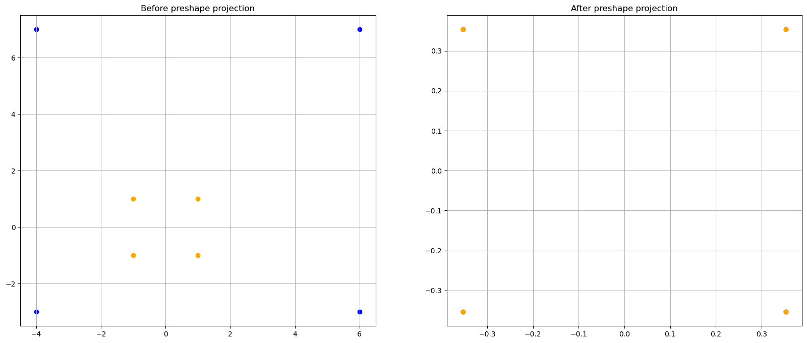
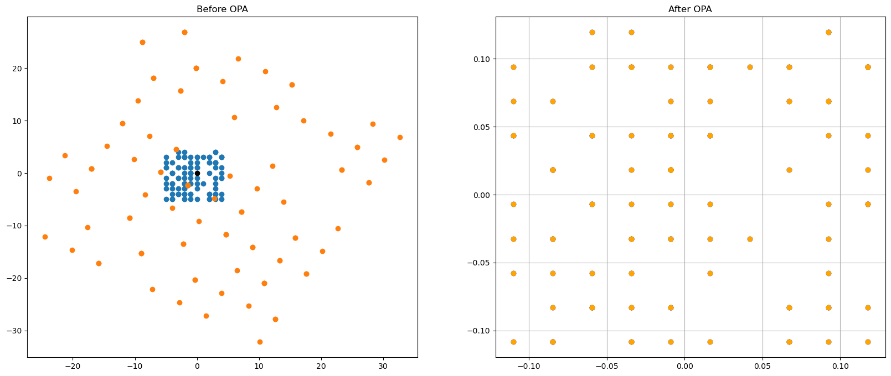
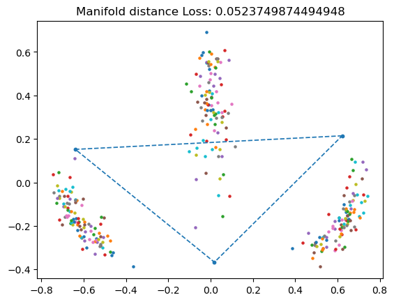
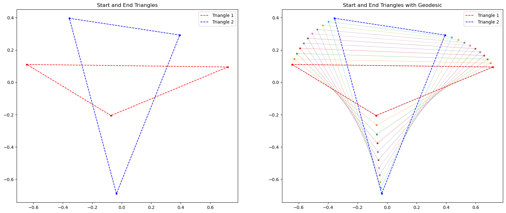
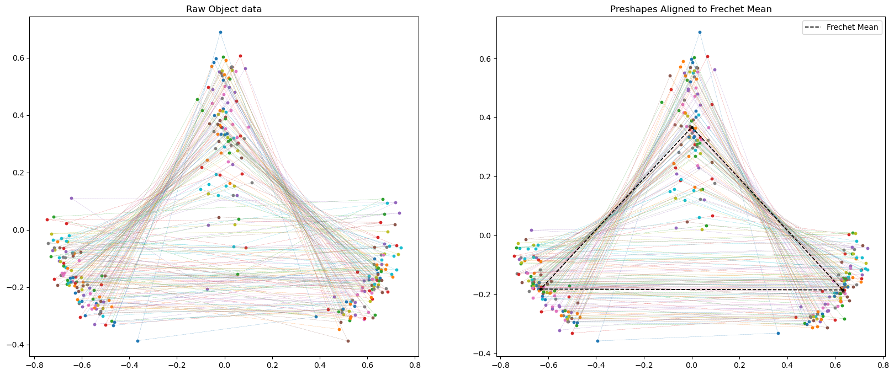
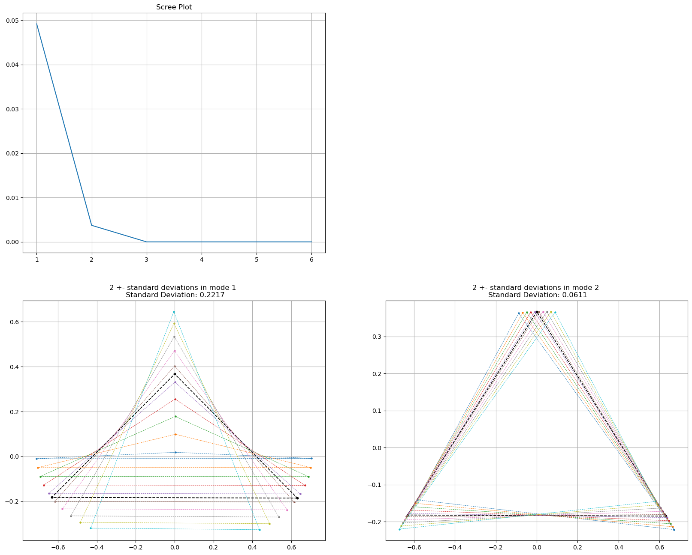
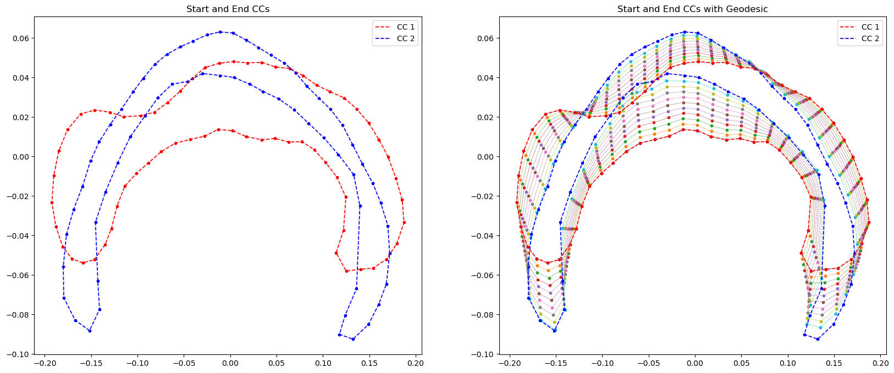
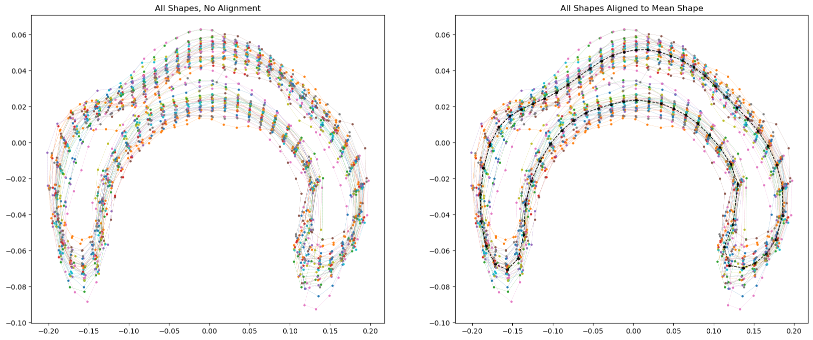
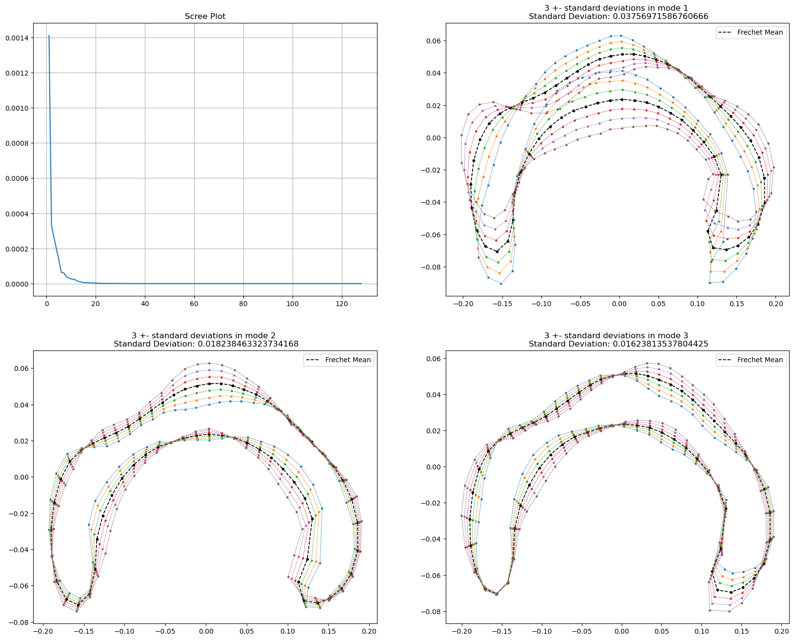

Code
import numpy as np
import matplotlib.pyplot as pltLogan Foster
March 13, 2026
\[ v_1 = \frac{\partial s}{\partial \theta} = \begin{bmatrix} -\sin \theta \cos \phi \\ \cos \theta \cos \phi \\ 0 \end{bmatrix} \]
\[ v_2 = \frac{\partial s}{\partial \theta} = \begin{bmatrix} -\cos \theta \sin \phi \\ - \sin \theta \sin \phi \\ \cos \phi \end{bmatrix} \]
$$
\[ g^{-1} = \begin{bmatrix} \frac{1}{\cos^2 \phi} & 0 \\ 0 & 1 \end{bmatrix} \]
\[ \Gamma ^ 1 _ {1,1} = \frac{1}{2} \left( g^{1,1} \left( \frac{\partial g_{1,1}}{\partial \theta} + \frac{\partial g_{1,1}}{\partial \theta} -\frac{\partial g_{1,1}}{\partial \theta} \right) + g^{1,2} \left( \cdots\right) \right). \] But \(g^{1,2} = 0, \frac{\partial g_{1,1}}{\partial \theta} = \frac{\partial \cos^2 \phi}{\partial \theta} = 0\), so we have \[ \Gamma ^ 1 _ {1,1} = 0. \]
\[ \Gamma ^ 2 _ {1,1} = \frac{1}{2} \left( g^{2,1} \left( \cdots \right) + g^{2,2} \left(\frac{\partial g_{1,2}}{\partial \theta} + \frac{\partial g_{1,2}}{\partial \theta} -\frac{\partial g_{1,1}}{\partial \phi} \right) \right). \]
But $ g^{2,1} = 0, = = 0\(, so\)$ ^ 2 _ {1,1} = (- ) = $$
\[ \Gamma ^ 1 _ {2,1} = \frac{1}{2} \left( g^{1,1} \left( \frac{\partial g_{1,1}}{\partial \phi} + \frac{\partial g_{2,1}}{\partial \theta} - \frac{\partial g_{2,1}}{\partial \theta} \right) + g^{1,2} (\cdots) \right). \]
But $ g^{2,1} = 0,$ so $ = 0$, so
\[ \Gamma ^ 1 _ {2,1} = \frac{1}{2} \left( g^{1,1} \left( \frac{\partial g_{1,1}}{\partial \phi} + \frac{\partial g_{2,1}}{\partial \theta} \right) \right) = \frac{1}{2} \frac{1}{\cos^2 \phi}\left( \frac{\partial \cos^2 \phi}{\partial \phi} \right) = \frac{1}{2} \frac{1}{\cos^2 \phi} \left( -2 \cos \phi \sin \phi\right) = -\tan \phi \]
By symmetry, $ ^ 1 _ {1,2} = -$
\[ \Gamma ^ 2 _ {2,1} = \frac{1}{2} \left( g^{2,1} \left( \cdots \right) + g^{2,2} \left(\frac{\partial g_{1,2}}{\partial \phi} + \frac{\partial g_{2,2}}{\partial \theta} -\frac{\partial g_{2,1}}{\partial \phi} \right) \right) = \frac{1}{2} 1 \left( 0 + \frac{\partial}{\partial \theta} 1 - 0 \right) = 0 \] By symmetry, $ ^ 2 _ {1,2} = 0$
\[ \Gamma^1_{2,2} = \frac{1}{2} \left( \cos^2 \phi ( 0 + 0 - 0) + 0 ( \cdots) \right) = 0 \]
\[ \Gamma ^ 2 _ {2,2} = \frac{1}{2} \left( g^{2,1} \left( \cdots \right) + g^{2,2} \left(\frac{\partial g_{2,2}}{\partial \phi} + \frac{\partial g_{2,2}}{\partial \theta} -\frac{\partial g_{2,2}}{\partial \phi} \right) \right) = \frac{1}{2} 1 \left( \frac{\partial}{\partial \phi} 1 + \frac{\partial}{\partial \phi} 1 - \frac{\partial}{\partial \phi} 1 \right) = 0 \]
So our Christoffel symbols are:
\[ \Gamma ^ 1 _ {1,1} = 0 \\ \Gamma ^ 2 _ {1,1} = \cos \phi \sin \phi \\ \Gamma ^ 1 _ {2,1} = -\tan \phi \\ \Gamma ^ 2 _ {2,1} = 0 \\ \Gamma ^ 1 _ {1,2} = -\tan \phi \\ \Gamma ^ 2 _ {1,2} = 0 \\ \Gamma ^ 1 _ {2,2} = 0 \\ \Gamma ^ 2 _ {2,2} = 0 \\ \]
In local coordinates, \[ \gamma (t) = (t, 0). \] So \[ \frac{d^2 \gamma }{d t ^2} = (0,0) \]
So we know that \(\gamma\) is a geodesic if it follows these equalities: $$ 0 =
{i,j=1}^{n} ^{1}{ij}((t)) , $$
$$ 0 =
{i,j=1}^{n} ^{2}{ij}((t)) . $$
First, $$ {i,j=1}^{n} ^{1}{ij}((t)) = - ^{n}{i} ^1{i,1}(t,0) + ^1_{i,2}(t,0) \
=-( ^1_{1,1}(t,0) + ^1_{2,1}(t,0) ) \
= -( 0 + ^1_{2,1}(t,0) 0 ) \ = 0 = $$
Next $$ {i,j=1}^{n} ^{2}{ij}((t)) = {i=1}^{n} ^2{i,1}(t,0) + ^2_{i,2}(t,0) \
= - ( ^2_{1,1}(t,0) + ^2_{2,1}() ) = - = 0 = $$
Since we have
$$
=
{i,j=1}^{n} ^{k}{ij}((t)) , $$ our curve \(\gamma (t) = s(t,0)\) is a geodesic.
We can draw different great circles from the same parameterization of our curve \(\gamma\) by applying a rotation matrix \(A\) to our coordinate map. For example, let us consider a rotation around the x axis by the angle \(\sigma\):
\[ A = \left[ \begin{array}{cc} 1 & 0 & 0 \\ 0 & \cos \sigma & \sin \sigma \\ 0 & -\sin \sigma & \cos \sigma \end{array} \right], \text{ so then } s(\theta, \phi) = A \left[ \begin{array}{cc} \cos \theta \cos \phi \\ \sin \theta \cos \phi \\ \sin \phi \end{array} \right] = \left[ \begin{array}{cc} \cos \theta \cos \phi \\ \cos \sigma \sin \theta \cos \phi + \sin \phi \sin \sigma \\ -\sin \sigma \sin \theta \cos \phi - \sin \phi \cos \sigma \end{array} \right]. \]
Now we have a curve \(\gamma (t, 0) = \left[ \begin{array}{cc} \cos \theta \\ \cos \sigma \sin \theta \\ -\sin \sin \theta \end{array}\right]\). A dizzying amount of algebra and reapeated applications of the identity \(1 = \sin^2 \theta + \cos^2 \theta\) yeild the exact same Riemannian metric as before: $$ g = \[\begin{bmatrix} \cos^2 \phi & 0 \\ 0 & 1 \end{bmatrix}\]. $$ This is of course intuitive, since any rotational transformation to our coordinate mapping will obviously preserve the orthonormlaity of \(v_1\) and \(v_2\) and leave length unchanged (meaning \(<Av_1, Av_1> = |Av_1|^2 \cdot \cos 0 = |v_1|^2 \cdot \cos 0 = <v_1, v_1>\)).
Therefore, any great circle can be constructed by keeping the same parameterazation of our curve and performing a rotation on our coordinate mapping.
I think I will use a \(2 \times n\) matrix to represent the points. I believe this will make it easier to perform OPA. However, I can always switch between the two if needed.
def project_to_preshape_sphere(X: np.ndarray):
# X: d x N
if X.shape[-1] == 1:
X = X.squeeze(-1)
X = X / np.linalg.norm(X, ord="fro", axis=(-2,-1))
return np.expand_dims(X, -1)
# first, remove centroids
centroids = np.mean(X, axis = -1)
if len(X.shape) == 3:
X = X - centroids[:, :, None]
X = X / np.linalg.norm(X, ord="fro", axis=(-2,-1))[:, None, None]
else:
X = X - centroids[:, None]
X = X / np.linalg.norm(X, ord="fro", axis=(-2,-1))
return XTesting preshape projection
fig, (ax1, ax2) = plt.subplots(1, 2, figsize = (20,8))
X_1 = np.array([[1, -1, -1, 1], [1, 1, -1, -1]]) * 5+ np.array([[1],[2]])
X_2 = np.array([[1, -1, -1, 1], [1, 1, -1, -1]])
ax1.scatter(X_1[0], X_1[1], color = "blue")
ax1.scatter(X_2[0], X_2[1], color = "orange")
ax1.title.set_text("Before preshape projection")
ax1.grid()
X1_s = project_to_preshape_sphere(X_1)
X2_s = project_to_preshape_sphere(X_2)
ax2.scatter(X1_s[0], X1_s[1], color = "blue")
ax2.scatter(X2_s[0], X2_s[1], color = "orange")
ax2.title.set_text("After preshape projection")
ax2.grid()
Testing OPA
X = np.random.randint(-5, 5, (2, 100))
fig, (ax1, ax2) = plt.subplots(1, 2, figsize = (20,8))
t = np.pi/3
R = np.array([
[np.cos(t), -np.sin(t)],
[np.sin(t), np.cos(t)]
])
X_t = 5 * R @ X + np.array([[1],[2]])
ax1.scatter(X[0,:], X[1,:])
ax1.scatter(X_t[0,:], X_t[1,:])
ax1.scatter(0,0, color= "black")
ax1.title.set_text("Before OPA")
X_s = project_to_preshape_sphere(X)
Xt_s = OPA(X_s, project_to_preshape_sphere(X_t))
ax2.scatter(X_s[0], X_s[1], color = "blue")
ax2.scatter(Xt_s[0], Xt_s[1], color = "orange")
ax2.grid()
ax2.title.set_text("After OPA")
Well, that looks great. Even with rotation, translation, and scaling, our points are still mapped to the same point on the pre-shape sphere!
Hold on, if \(p\) is a point on the d sphere, \(p \in S^d \subset R^{d+1}\), and \(v\) is a tangent vector to \(p\), then \(v \in R^d\), since $ S^d $ is a \(d\)-dimensional manifold. How do I add \(\~v \sin \theta\) to \(p \cos \theta\)? Actually, I think I’m over thinking this. The tangent space is a \(d\)-dimensional space, but it’s basis vectors are in \(R^{d+1}\). The tangent space to a point \(p\) on our shape manifod should just be \(\{v \in R^{d+1}: <p,v> = 0\}\)
def EXP(p, v):
assert np.isclose(np.linalg.norm(p), 1), "Starting point p must be on the preshape sphere: it's magnitude should be 1"
assert np.isclose(np.sum(p * v), 0, atol=1e-7), ValueError("p and V must be orthogonal")
theta = np.linalg.norm(v)
if theta == 0:
return p
n = v / theta
q = p * np.cos(theta) + n * np.sin(theta)
return qarray([ 1.2246468e-16, 0.0000000e+00, -1.0000000e+00])Implementing this wasn’t too hard. Basically, we find the component of \(q\) which is in the direction of \(p\) through some very basic linear algebra: \[ \text{proj}_p(q) = \frac{p \cdot q}{|p||q|} p. \] So then the component of \(q\) which is orthogonal to \(p\) is \(q_\perp = q- \text{proj}_p(q)\). This is helpful, because we need to project \(q\) back to a vector in the tangent space of \(p\). This tangent space must be orthogonal to \(p\), which is why we need to find \(q_\perp\). Now that we have found the direction on the tangent space we need to travel along to get from \(p\) to \(q\) by means of the exponential map, all we need is the distance to travel to rescale \(q_\perp\). But since we are on a unit sphere, arc/geodesic distance is just the cosine of the angles between them which is just the dot product of the two vectors!
Note In practice, I found that I needed to normalize both \(p\) and \(q\), else rounding errors would compound and closeness assertions would fail.
We only need to be careful about the case when \(p\) and \(q\) are parallel. If this is the case, \(|q_\perp| = 0\) and we get a nan doing division. This is less than ideal. There is, however, an easy fix. If \(p\) and \(q\) are parallel, then \(\theta = \pi\) or \(\theta = 0\). Either way, we return
\[ v = \left[ \begin{array}{cc} \theta \\ 0 \\ \vdots \\ 0 \end{array} \right]. \] If \(\theta = 0\), we don’t move anywhere. If \(\theta = \pi\), then moving \(\pi\) in any direction gets us to the opposite side of the sphere.
def LOG(p, q):
q = OPA(p, q)
og_shape = p.shape
# flatten p and q if they are still in matrix form
if len(p.shape) == 2 or len(q.shape) == 2:
p = p.flatten()
q = q.flatten()
p_norm = np.linalg.norm(p)
q_norm = np.linalg.norm(q)
assert np.isclose(p_norm, 1, atol=1e-7), "p must be on preshape_sphere"
assert np.isclose(q_norm, 1, atol=1e-7), "q must be on preshape_sphere"
p = p / p_norm
q = q / q_norm # This shouldn't be necessary, but without it we get compounding rounding error which fail the below assertion about dot_product normality
dot = np.dot(p,q)
theta = np.arccos(np.clip(dot, -1, 1)) # this is necessary in case the norms are barely off 1 due to some binary rounding error.
q_o = q - dot * p
assert np.isclose(np.dot(q_o, p), 0, atol=1e-7), f"dot product is actually {np.dot(q_o, p)}"
q_o_norm = np.linalg.norm(q_o)
if q_o_norm == 0: # if q and p are parallel, either theta = 0 or theta = pi
v = np.zeros_like(p)
v[0] = theta
return v.reshape(og_shape)
else:
return (q_o * theta / q_o_norm).reshape(og_shape)So, we are trying to estimate the “average” shape out of N shape by finding the point on the shape sphere that minimizes squared geodesic distance between all the shapes. I’m also going to log the losses at each step to make sure my SGD alg is actually, well, descending.
def frechet_mean_GD(X, starting_indx = 0, verbose = False):
# hold on, should we do OPA before the Log map??? A: Yes
assert len(X.shape) == 3, "Can only find the mean of multiple shapes, make sure the array of shapes is size N x K x D"
STEPS = 250
mu = X[starting_indx]
losses = [] # losses
for i in range(STEPS):
errors = []
deltas = []
for j in range(X.shape[0]):
delta = LOG(mu, X[j])
deltas.append(delta)
error = np.linalg.norm(delta)**2
errors.append(error)
deltas = np.array(deltas)
MSE = np.mean(errors, axis= 0)
delta = np.mean(deltas, axis = 0)
losses.append((MSE, np.linalg.norm(delta)))
mu = EXP(mu, delta).reshape(X[0].shape)
if len(losses) > 20 and np.max(losses[-20:-1]) / MSE < 1 + 1e-7:
if verbose:
print(f"stopping early at step {i}!")
return mu , np.array(losses)
if verbose:
print("didn't early stop")
return mu , np.array(losses)To perform appr. PGA, we need to 1. Find the Frechet mean \(\mu\) 2. Compute the Log map from the mean to all data pounts \(u_i = \text{Log}_\mu x_i, U_{i\cdot} = u_i\) 3. Perform simple PCA in this tangent space:
a. $\Sigma = \frac{1}{N-1} U U^T$
b. Eigenvectors/values are given by the SVD of $\Sigma$. (In practice, np.linalg.eig does this for us!)def ApprPGA(X):
og_shape = X.shape
mean, _ = frechet_mean_GD(X)
N = X.shape[0]
# X = X.reshape((og_shape[0], og_shape[1] * og_shape[2]))
# align first ?
vs = []
for j in range(N):
S_a = OPA(mean, X[j])
vs.append(LOG(mean, S_a).flatten()) # Flatten here to make U cooperate as a covar matrix
U = np.array(vs)
#print(U.shape)
centroids = np.mean(U, axis = 0)
U = U - centroids[None, :]
# print(U.shape)
assert np.all(np.isclose(U.mean(axis=0), 0))
CoVar = 1/(N - 1) * U.T @ U
assert CoVar.shape[1] == X.shape[-1] * X.shape[-2]
V, eigvalues, _ = np.linalg.svd(CoVar)
return V.T, eigvalues, CoVarImportant: V is a matrix where the column vectors represent the eigenvectors of our covariance matrix \(\Sigma\). Remember to take the columns of \(V\) to get the eigenvectors of the covarience matrix, not the rows!
#make random triangles
N = 100 # making 100 random triangles with the expectation that half of them will be thrown out by a negative-det R
p0 = np.repeat(np.expand_dims([1,0], 0), N, axis=0)
p1 = np.repeat(np.expand_dims([-1,0], 0), N, axis=0)
p2 = np.random.normal((0,1), (0,.5), size = (N,2))
triangles = np.stack((p0,p1,p2), axis=2)
noise = np.random.normal(0, 0.1, size = triangles.shape)
triangles += noise
triangles = project_to_preshape_sphere(triangles)
# plot a traingle
def scatter_ts(Ts):
for T in Ts:
plt.scatter(T[0, :], T[1, :], s = 5)
def plot_shape(T, label = None, vetrices = True, s = 10, lw = None, color = None, highligh_diff_points = False, ax = None):
ax = ax if ax is not None else plt
if highligh_diff_points:
ax.plot(
np.concatenate((T[0, :], [T[0, 0]])),
np.concatenate((T[1, :], [T[1, 0]])),
linestyle='dashed',
label = label,
lw = s / 8 if lw is None else lw,
color = color if color is not None else None
)
ax.scatter(
T[0, :], T[1, :],
s = s,
color = ["red", "blue", "green"]
)
else:
ax.plot(
np.concatenate((T[0, :], [T[0, 0]])),
np.concatenate((T[1, :], [T[1, 0]])),
linestyle='dashed',
label = label,
lw = s / 8 if lw is None else lw,
color = color if color is not None else None
)
if vetrices:
ax.scatter(
T[0, :], T[1, :],
s = s,
color = color if color is not None else None
)
This is really good. Even when I start with a “flat” triangle, my gradient descent algorithm finds a triangle that looks like the mean! I was worried at first, becuase I would see that my GD algorithm would converge afer one step, which seemed too good to be true. But I guess it is just very easy to find the mean.
I was also worried becuase it seemed like the mean triangle always ended up really close to \(\mu_1\), but this souldn’t be suprising, since using OPA makes our shapes rotationally invarient!
# Get the starting triangle and the ending triangle to plot the geodesic between them
t1_idx = triangles[:, 1, 2].argmin()
t1 = triangles[t1_idx]
t2_idx = triangles[:, 1, 2].argmax()
t2 = triangles[t2_idx]
t2 = OPA(t1, t2)
fig, (ax1, ax2) = plt.subplots(1, 2, figsize = (20,8))
plot_shape(t1, label = "Triangle 1", color="red", ax=ax1)
plot_shape(t2, label = "Triangle 2", color="blue", ax=ax1)
ax1.title.set_text("Start and End Triangles")
ax1.legend()
v = LOG(t1, t2)
ts = np.linspace(0,1, 10, endpoint= False)
vs = ts[:,np.newaxis,np.newaxis] * v[np.newaxis,:]
for i, v in enumerate(vs):
plot_shape(EXP(t1, v), lw=0.5)
plot_shape(t1, label = "Triangle 1", color="red", ax=ax2)
plot_shape(t2, label = "Triangle 2", color="blue", ax=ax2)
ax2.legend()
ax2.title.set_text("Start and End Triangles with Geodesic")
# Plot raw object data
fig, (ax1, ax2) = plt.subplots(1, 2, figsize = (20,8))
ax1.title.set_text("Raw Object data")
for t in triangles:
plot_shape(t, vetrices= True, s = 10, lw = 0.2, ax = ax1)
# plot the objects aligned to the mean
mean, _ = frechet_mean_GD(triangles)
for t in triangles:
t = OPA(mean, t)
plot_shape(t, vetrices= True, s = 10, lw = 0.2, ax = ax2)
plot_shape(mean, s = 10, color = "black", label="Frechet Mean", ax= ax2)
ax2.legend()
ax2.title.set_text("Preshapes Aligned to Frechet Mean")
Note to self: Make sure that when you run this, the triangle is upward facing, or else all the friends you show it to will think it looks like a uterus.
Aligning the shapes makes our space look much more organized, and it clearly reveals two important facts: 1. Our shape space is rotationally invariant 2. The the estimated frechet mean correctly lands in the “middle” of our data.
Looking at the Scree plot, it is clear that there are only 2 meaningful modes to this data. The last 4 eigenvalues were dropped since their standard deviations failed np.isclose(std, 0).
# print(triangles.shape[-2:])
PCs, Vars, _ = ApprPGA(triangles)
fig = plt.figure(figsize=(20, 16))
plt.subplot(221)
plt.title("Scree Plot")
plt.plot([i + 1 for i in range(len(Vars))], Vars)
plt.grid()
for i in range(len(PCs)):
if np.isclose(Vars[i], 0):
break
std = np.sqrt(Vars[i])
fig = plt.subplot(223 + i)
k = 2
ts = np.linspace(-k, k, 10)
pc = PCs[i].reshape(2,3)
plt.title(f"{k} +- standard deviations in mode {i+1} \n Standard Deviation: {std:.4f}")
plot_shape(mean, s = 10, color= "black", label = "Frechet Mean")
for t in ts:
if t == 0:
continue
T = EXP(mean, t * std * pc)
T = OPA(mean, T)
plot_shape(T, s = 5, label=f"PC: {i} STDs:{t:.1f}")
plt.grid()
The fist mode of variation is pretty obvious. It encapsulates the variance from the random gaussian that dictates the height of the third point of the triangle. It looks like it also squishes the triangle horizontally, but I’m prety sure thats just an artifact of how the taller thrid point forces the other points to be closer to the origin to keep the coordinates on the unit sphere.
The second mode of variation accounts for the way in which the left can be more obtuse and the right one more accute and vise versa.
I definielty was expecting to see the first mode of variation behave how it does, but I didn’t really have expectations for the other mode. But, not that I see it, it seems like the shape space’s second mode definitely should deform in that way.
## load CC data
from pathlib import Path
import numpy as np
shapes_txt = Path("cc-shapes")
shapes_list = []
for path in shapes_txt.iterdir():
shape = []
# print(path)
with open(path, "+r") as file:
for line in file:
x_s, y_s = line.strip().split(" ")
shape.append([float(x_s), float(y_s)])
shapes_list.append(shape)
# print(shapes_txt.iterdir()[0])
shapes = np.array(shapes_list).transpose(0, -1, -2)
# X = shapes[10]
# plt.scatter(X[0,:], X[1,:])C_1idx = X[:, 1, 2].argmin()
C_1 = X[C_1idx]
C_2idx = X[:, 1, 2].argmax()
C_2 = X[C_2idx]
plt.figure(figsize=(20,8))
plt.subplot(121)
plot_shape(C_1, label = "CC 1", color="red")
plot_shape(C_2, label = "CC 2", color="blue")
plt.title("Start and End CCs")
plt.legend()
v = LOG(C_1, C_2)
ts = np.linspace(0,1, 10, endpoint= False)
vs = ts[:,np.newaxis,np.newaxis] * v[np.newaxis,:]
plt.subplot(122)
for i, v in enumerate(vs):
plot_shape(EXP(C_1, v), lw=0.5)
plot_shape(C_1, label = "CC 1", color="red")
plot_shape(C_2, label = "CC 2", color="blue")
plt.legend()
plt.title("Start and End CCs with Geodesic")Text(0.5, 1.0, 'Start and End CCs with Geodesic')
fig, (ax1, ax2) = plt.subplots(1, 2, figsize = (20,8))
ax1.title.set_text("All Shapes, No Alignment")
for CC in X:
plot_shape(CC, vetrices= True, s = 5, lw = 0.2, ax= ax1)
mean, _ = frechet_mean_GD(X, verbose= False)
ax2.title.set_text("All Shapes Aligned to Mean Shape")
for CC in X:
CC_r = OPA(mean, CC)
plot_shape(CC, vetrices= True, s = 5, lw = 0.2, ax = ax2)
plot_shape(mean, color="black", s = 10, lw = 1, ax= ax2)
It is hard to see an obvious difference in the aligned shapes. It seems like they are already pretty centered
V, Vars, _ = ApprPGA(X)
plt.figure(figsize=(20,16))
plt.subplot(221)
plt.plot([i + 1 for i in range(len(Vars))], Vars)
plt.grid()
plt.title("Scree Plot")
for i in range(3):
ts = np.array([-3,-2,-1, 1, 2, 3])
std = np.sqrt(Vars[i])
pc = V[i].reshape(mean.shape)
plt.subplot(222+i)
plt.title(f"3 +- standard deviations in mode {i+1} \n Standard Deviation: {std}")
plot_shape(mean, s = 10, color= "black", label = "Frechet Mean")
for t in ts:
T = EXP(mean, t * std * pc).reshape(2,-1)
T = OPA(mean, T)
plot_shape(T, s = 5)
plt.legend() 
The first mode of deviation seems to encompase the way in which the CCs can be more curved (like a wish bone) or less curved (like a watermellon rine). The second mode encompases the way the CCs can be thicker or thinner at the ends and middle. The third mode accounts for the way the CCs can be kind of wavey.
For triangle shapes, the maximum number of modes is 2. This is becuase our data starts off as being \(2 \times 3 = 6\) dimensional. Removing translation in two dimensions yeilds two less dimensions of freedom, and removing scale and rotation removes another 2. This leaves us with only 2 leftover modes of variance.
For an set of shapes with \(k\) \(2\) dimensional points, we start of with \(2 \times k\) dimensions. Making our shapes invariant to translation, rotation, and scale removes the same 4 dimensions of freedom, leaving us with \(2 \times k -4\) modes of variance.
Prompts to chatbots: 1. “Write this in latex (with image of geodesic equation attached)” 2. Asked about rounding errors in numpy: https://chatgpt.com/share/e/69a9b28e-1df8-8012-acb0-8b3410c3bf48 3. “I have an N x D x K array in np, and I want to choose the D x K array with the smallest value in the d,k-th slot”